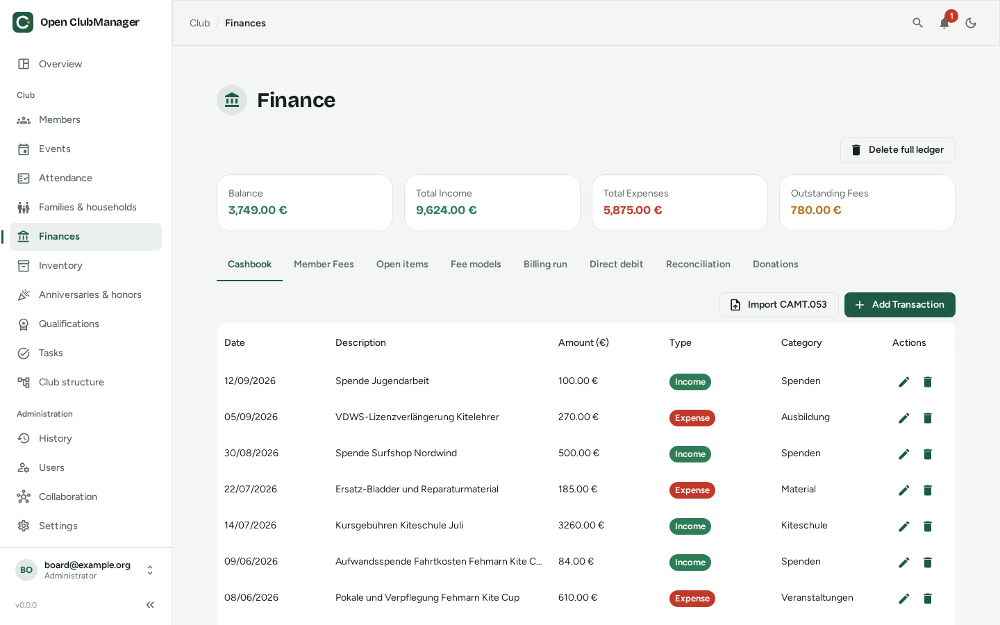
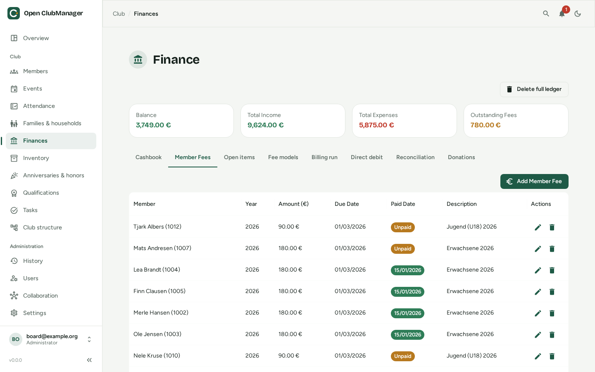
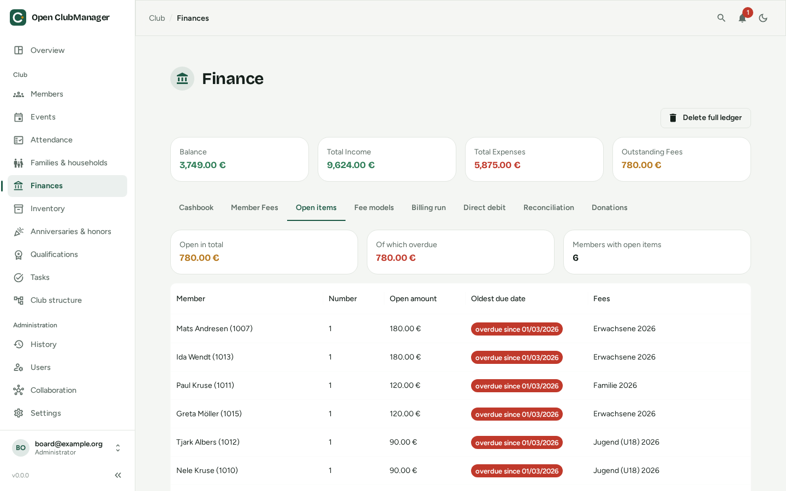
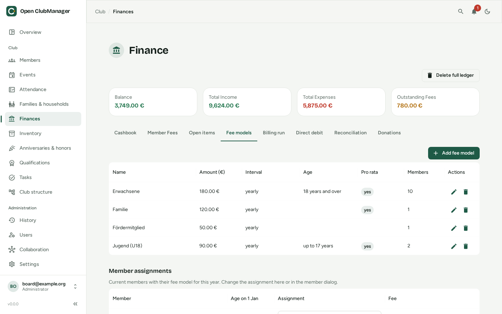
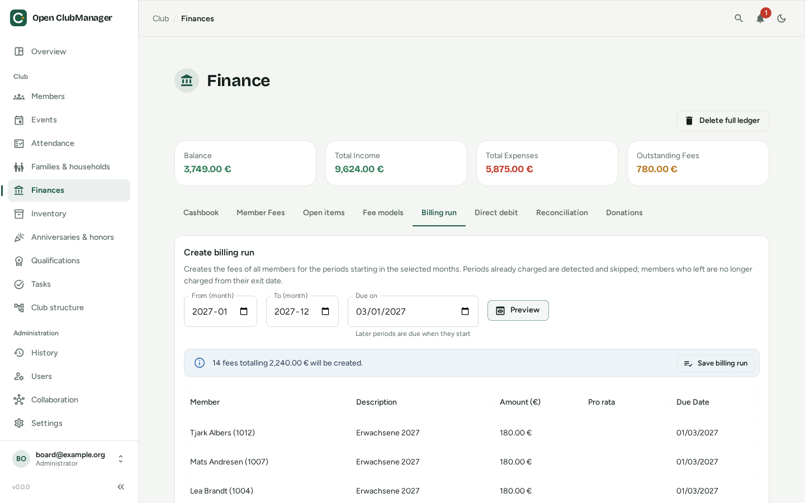
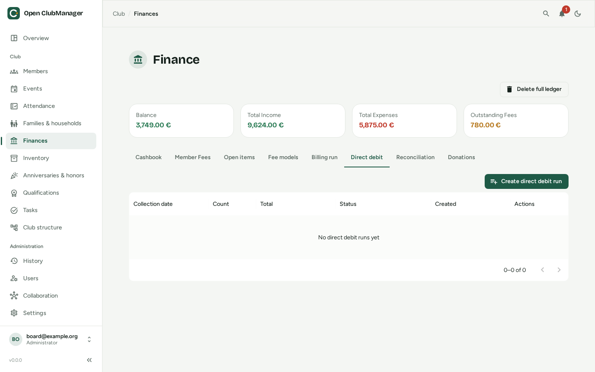
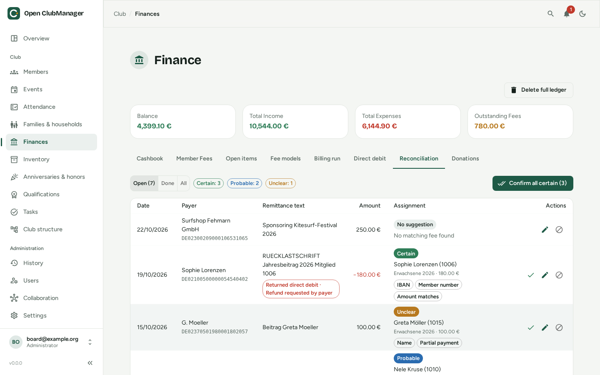
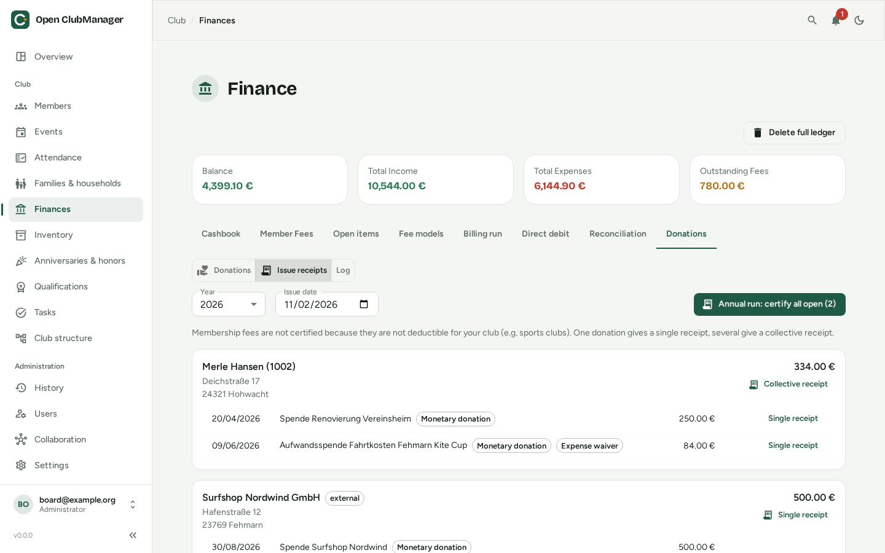

Finances¶
Cash book, member fees, fee models with automatic billing runs, open items, fee collection by SEPA direct debit, payment reconciliation with the bank statement and donation receipts. Only visible to administrators and treasurers.

At the top you see the balance, total income, total expenses and outstanding fees.
Cash book¶
Every income and expense is a transaction with date, description, amount, type (income/expense), category and notes.
- Add Transaction creates a new transaction.
- Use the pencil and bin icons to edit or delete transactions.
Costs from maintenance in the inventory can be booked straight into the cash book as an expense.
Importing a bank statement (CAMT.053)¶
Instead of typing every transaction, import your bank's statement in CAMT.053 format (XML). Most banks offer this in online banking, often under "export statement" or "export transactions → CAMT".
- Click Import CAMT.053 and select the file.
- Open ClubManager creates a transaction for every bank movement: credits as income, debits as expenses. The payer's name and IBAN and the direct debit references are kept for the payment reconciliation.
- Afterwards you see a summary of how many transactions were imported, and for how many there is a suggestion which open fee they pay. Open reconciliation takes you straight to the review.
Current limitations
Import each statement only once. Already imported movements are not detected yet and would be booked twice.
Member fees¶

Here you manage the fees per member and year: amount, due date, paid date and description. Open fees are marked as Unpaid.
A fee counts as paid once you enter the paid date, a direct debit run is confirmed, or enough payments are assigned to it in the payment reconciliation. A partly paid fee stays unpaid until the rest arrives.
Add single fees (e.g. an admission fee) with Add Member Fee. The regular fees of all members are better created at once from fee models with a billing run.
Open items¶

The Open items tab shows all unpaid fees, grouped per member: number of fees, open amount, oldest due date and which fees they are. At the top you see the total open amount, how much of it is overdue and how many members have open items. Overdue items are marked red. Members with the highest open amount come first.
Fee models¶

A fee model is one of your club's fee classes, e.g. adults, youth, family, passive or reduced. Create them in the Fee models tab with Add fee model:
| Field | Meaning |
|---|---|
| Name | Used in the description of the created fees, e.g. "Adults 2027". Must be unique. |
| Amount | Amount per period of the interval (for quarterly, the quarterly fee). |
| Interval | yearly, half-yearly, quarterly or monthly. Periods follow the calendar year (first half = January–June, first quarter = January–March, …). |
| Minimum / maximum age | Optional. Models with an age limit are assigned automatically by age (see below). Both limits are inclusive: maximum age 17 means "up to and including 17". |
| Pro rata | When members join or leave during a period, charge only the months of membership (see Pro rata). |
A changed amount applies to all future billing runs; fees already created stay unchanged.
Which member pays which model?¶
Member assignments lists all current members with their age on 1 January and the fee they pay this year. Change the assignment right in the list or in the member dialog under Membership → Fee model:
- Automatic by age (default): the member gets the model with an age limit that fits their age. If several fit, the one with the narrowest age range wins (e.g. students 18–27 before adults 18 and over).
- A specific model, e.g. family or passive: applies regardless of age.
- Exempt from fees, e.g. for honorary members: the member gets no fees.
Coming of age
What counts is the age on 1 January of the fee year. A member who turns 18 in June still pays the youth fee that year and the adult fee automatically from the next year. This way the change never leaves a gap or charges twice, even if the two models have different intervals.
Members without a birthday or without a matching model are marked yellow and skipped by billing runs. When a model is deleted, its members get their model by age again.
Billing run¶

A billing run creates the fees of all members for a range at once, typically at the start of the year for the whole year.
- In the Billing run tab, choose the range: From (month) and To (month), e.g. January to December 2027. All fee periods that start in these months are charged.
- Set Due on, e.g. 1 March. Periods that start later (e.g. the third quarter) are due when they start.
- Click Preview. Nothing is saved yet. The preview shows the number and total of the fees, every single fee with amount and due date, and below who is skipped and why:
- already charged: the member already has a fee from a billing run for this period,
- without a matching fee model: e.g. the birthday is missing,
- exempt from fees.
- If everything is right, Save billing run. The fees appear under Member fees and Open items and can be collected by direct debit as usual.
Previous billing runs lists every saved run with the number of fees, the total and how many fees are already paid.
No duplicate fees¶
Open ClubManager records which period every created fee is for. A period that has already been charged to a member is never charged a second time:
- If you start the same billing run again, the preview shows "nothing to charge" and saving is refused.
- If the range overlaps an earlier run, only the missing periods are charged. So you can, for example, repeat the run in summer to charge members who joined since.
- If you delete a created fee, its period is free again and can be charged again.
Fees added by hand
This only applies to fees from a billing run. If you have already added fees of a period by hand with Add Member Fee (e.g. the yearly fee before switching to fee models), they would be charged a second time. Start the first billing run with the next period, or delete the open fees added by hand first.
To undo a billing run created by mistake, use the bin icon in Previous billing runs: all open fees of the run are deleted, paid ones stay. If fees are in a direct debit run that has not been confirmed, cancel or confirm that run first.
Joining and leaving¶
- Members who left are no longer charged from their exit date: periods that start on or after the exit date get no fee. On the exit date itself the person is no longer a member.
- Members who join only after a period has ended get no fee for that period.
Pro rata¶
Without the Pro rata option, the full amount is due for a period as soon as the person is a member on at least one day of it. With Pro rata, every month of the period counts in which the person is a member on at least one day; the corresponding share is charged, rounded to the cent.
| Example (yearly fee €120, pro rata) | Months | Fee |
|---|---|---|
| Joins on 1 or 30 April | April–December = 9 | €90.00 |
| Leaves on 1 July (last day: 30 June) | January–June = 6 | €60.00 |
| Joins 15 March, leaves 20 August | March–August = 6 | €60.00 |
In the preview, pro rata fees are marked "pro rata of …".
Direct debit (SEPA)¶

In the Direct debit tab you collect open fees by SEPA Core direct debit. Open ClubManager creates a file in the pain.008 bank format that you upload in online banking. The tab only appears if your role may edit finances and, with collaboration, your device receives bank and finance data.
One-time setup¶
- In the settings under SEPA direct debit, enter the club name, the creditor identifier (issued by your national bank, e.g.
DE98ZZZ09999999999), the IBAN of the club account and optionally a remittance template. - For every member who pays by direct debit, enter the IBAN, SEPA Mandate Date and a unique mandate reference (e.g.
NW-1001) under Bank Details in the member dialog.
Creating a direct debit run¶
Click Create direct debit run. A wizard guides you through three steps:
- Select fees: all open fees are listed; partly paid fees with the amount still due. Fees that can't be collected (no IBAN, no mandate, no mandate reference, invalid IBAN …) are listed under Cannot be collected with the reason; complete the member's data.
- Due date & remittance: the collection date. The file must reach the bank at least one business day before. Below it you see a preview of the remittance text.
- Review & export: check the count, total, first (FRST) and recurring (RCUR) collections, then click Create & download.
The fees are then marked as Being collected.
After the export¶
| Step | Where |
|---|---|
Upload the .xml file in online banking and authorise it |
at your bank |
| Once the bank has collected: Confirm as paid and enter the date; all fees of the run are marked as paid | the run in the list |
| Returned debits: import the bank statement and confirm them in the reconciliation; the fee is open again and can be collected once more | Payment reconciliation |
| Created a run by mistake? Cancel run and the fees are open again. Then don't upload the file, or revoke the order at the bank | the run in the list |
Download XML file gives you a run's file again.
First and recurring collections
When a mandate is used for the first time, Open ClubManager marks the debit as a first collection (FRST), afterwards as recurring (RCUR). This happens automatically.
Payment reconciliation¶

In the Reconciliation tab you assign imported incoming payments to open fees instead of looking up every transfer by hand. Open ClubManager suggests which fees each transaction pays; nothing is booked until you confirm. Like direct debit, the tab only appears if your role may edit finances and your device receives bank and finance data.
How suggestions are made¶
For every incoming payment Open ClubManager checks:
- the member number in the remittance text, e.g. "Fee 2026 member 1013" or "No. 12" (short numbers only with a word such as "Mitglied", "member", "Nr.", "No." or "#" in front),
- the payer's IBAN against the members' bank details,
- the name of the payer and in the remittance text, also with umlauts ("Möller" = "Moeller") and small typos,
- the amount: does it match one open fee, all open fees of the member, or of their household?
This gives the match quality:
| Match quality | Meaning |
|---|---|
| Certain | Member number or IBAN recognised and the amount matches exactly |
| Probable | Member number or IBAN recognised but the amount differs (partial or overpayment), or name and amount match |
| Unclear | Only the name matches, not the amount; check carefully |
| No suggestion | No matching open fee, e.g. for donations or sponsoring |
The chips below a suggestion show what it was recognised by (e.g. Member number, IBAN, Amount matches, Household, Partial payment).
Reviewing and confirming¶
- Confirm (tick) takes over the suggestion. The fee gets the booking date as paid date.
- Confirm all certain takes over all suggestions rated Certain at once.
- Change assignment (pencil) opens a searchable list of all open fees. Tick the right fees and adjust the amounts; this is how you correct a suggestion or assign a transaction without one yourself.
- Mark as reviewed without fee is for a transaction that pays no fee (e.g. a donation). It disappears from the open transactions.
- Undo (under Done) takes an assignment back. The fees return to their previous state.
Partial payments and collective transfers¶
- If a member pays in instalments, assign every instalment to the same fee. The fee stays Unpaid until the total is reached; a direct debit then only collects the rest.
- If parents pay for several children at once, the suggestion splits the amount across the household's fees. In the dialog you can pick any number of fees, also of different members, each with its own amount.
- If an overpayment leaves a rest, it is shown and not assigned to any fee.
Returned direct debits¶
Open ClubManager recognises a returned direct debit on import by its bank code or return reason and shows it in red with the reason, e.g. Insufficient funds or Refund requested by payer. The suggestion names the fee that had been paid: reliably by the debit reference for runs created in Open ClubManager, otherwise by IBAN, member number and amount.
When you confirm the returned debit, the fee is open again and can be collected in a new direct debit run. Bank charges for the return remain as a rest without fee.
Trying it with the demo data
If you chose the demo data during setup, you can try the reconciliation with the example file testdata/camt053-reconciliation.xml: it contains certain, probable and unclear payments, a family transfer, a returned direct debit and a sponsoring income.
Donation receipts¶

Charitable clubs in Germany may issue donation receipts (Zuwendungsbestätigungen) for donations (and, depending on their purposes, membership fees), which donors use to deduct the donation from their taxes. Open ClubManager creates them as PDF after the official template of the Federal Ministry of Finance – as a single receipt or as a collective receipt with annex. Administrators and treasurers see the Donations tab when their device receives the finances and the members' addresses.
The club is liable for correct receipts
Whoever issues a wrong donation receipt intentionally or through gross negligence is liable for the lost tax (§ 10b (4) EStG). Check donor, amount and date before you issue a receipt. When in doubt, ask your tax adviser or the tax office.
One-time setup¶
Enter the data of your tax office notice in the settings: club name and address, tax office, tax number, kind and date of the notice and the privileged purposes exactly as in the notice (in German, e.g. "des Sports (§ 52 Abs. 2 Satz 1 Nr. 21 AO)").
| Kind of notice | Valid for receipts |
|---|---|
| Exemption notice (Freistellungsbescheid) or annex to the corporate tax assessment | 5 years from the date of the notice |
| Assessment under § 60a AO (e.g. for a newly founded club) | 3 years from the date of the notice |
If the notice is older, the tax office no longer recognises the receipts (§ 63 (5) AO). Open ClubManager then shows a warning in the settings and in the tab, with the date until which the notice was valid.
Membership fees
For sports clubs and clubs with leisure purposes (e.g. culture of a leisure nature, local heritage, allotments) membership fees are not deductible (§ 10b (1) sentence 8 EStG). Leave the switch Membership fees are tax-deductible off: only donations are certified, and the receipt confirms that it is not a membership fee. With the switch on, the paid fees of the year are listed as well.
Recording donations¶
A donation is an income in the cash book with the category Spende (or "Spenden"). Donations → Donations lists all such incomes.
- Click the pencil next to a donation and choose the member or an external donor. Add external donors (e.g. companies) below under External donors or right in the dialog.
- Tick Waiver of reimbursement of expenses for an expense donation, i.e. when someone waives the reimbursement of travel costs or similar.
- An income without a category gets the category "Spende" when you assign it.
A receipt needs the donor's complete address (street, postal code and town). For members it comes from their contact details.
Issuing receipts¶
Under Donations → Issue receipts choose the year and the issue date. The list shows every donor with their donations of the year; items already certified are marked with the receipt number.
- Single receipt certifies exactly one donation.
- Collective receipt combines all open donations of a donor in the year. The annex lists each donation with date, kind and amount.
- Annual run creates the missing receipts for all donors of the year at once – a collective receipt for several donations, a single receipt otherwise. Donors without a complete address are skipped and named.
The PDFs are downloaded right away (for the annual run all in one file, each receipt starting on a new page). Print and sign them.
Numbering, log and duplicates¶
Every receipt gets a sequential number per year, e.g. 2026-0001. Donations → Log shows which receipt was issued when, for whom and by whom.
- A donation can be certified only once. If you create a receipt for the same donations again – or click Create duplicate in the log – you get a duplicate with the same number, clearly marked DUPLIKAT on the PDF, which is logged as well.
- If a receipt was wrong (e.g. wrong amount), void it with a reason. It stays in the log and is marked as voided on the PDF; its donations can then be certified again. A certified donation can only be assigned to another donor after the receipt was voided.
Deleting the full ledger¶
For a fresh start (e.g. after trying things out with demo data) you can delete all transactions, fees and billing runs at once; fee models and member assignments stay. For safety you have to type a confirmation word. This cannot be undone; create a backup first.
Not a replacement for accounting
The cash book is a helper for everyday club life. It does not replace tax-compliant bookkeeping, accounting exports or advice from tax advisors or auditors.